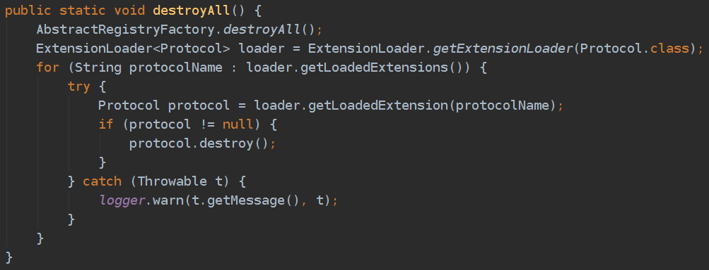
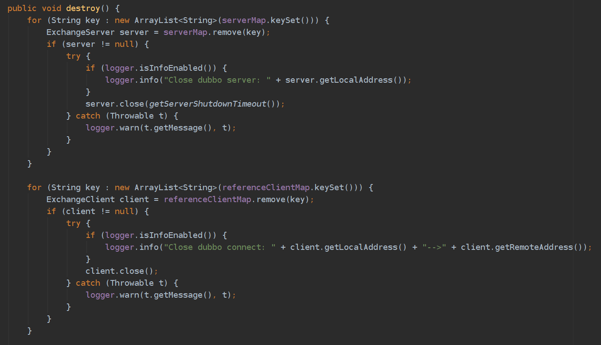
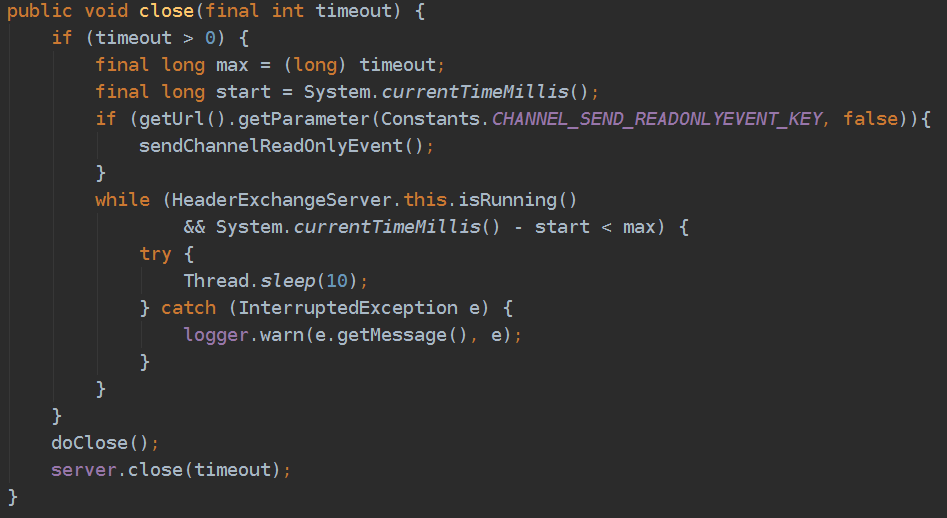
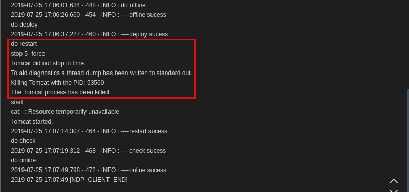
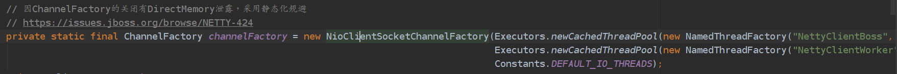
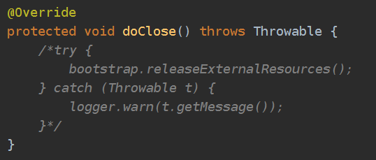
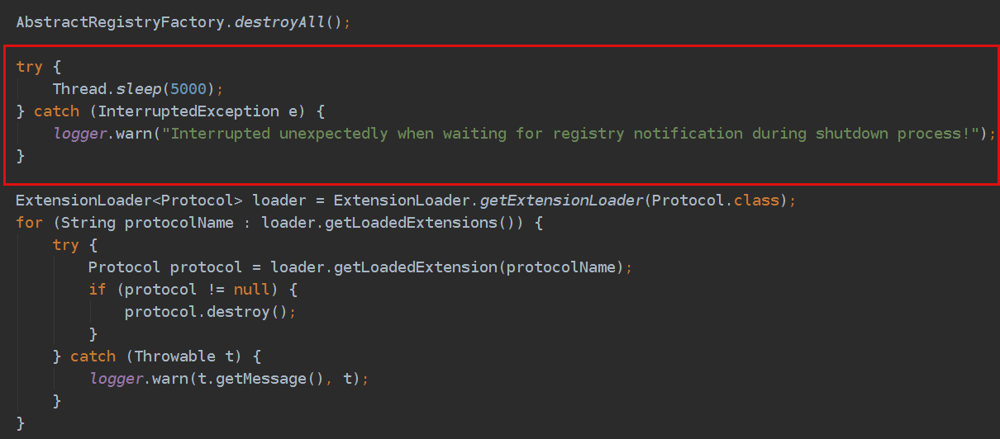
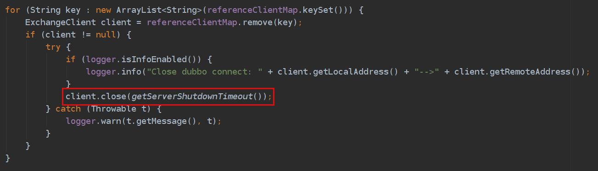

问题背景
我们微服务之间的远程调用使用的是dubbo框架（版本2.4.9），在最近几次服务的发布中，我们发现在dubbo provider服务的重启过程中，如果此时正处于业务的高峰期，短时间内会有大量的rpc调用失败，如果consumer侧没有重试机制或本地兜底策略的话，很可能导致业务异常。
为了解决上述问题，我们有必要知道我们服务上下线过程中，dubbo究竟做了哪些事情。
服务上线
首先看在上线过程中，dubbo是如何做到服务的注册和发现的。dubbo的架构如下图：

对于provider，dubbo会监听Spring容器的启动刷新事件(ContextRefreshedEvent)，调用export()方法暴露服务。在使用zk作为注册中心的前提下，export()方法按顺序做下面3件事。
- URL装配：读取provider端配置，根据约定好的协议将服务装配成URL的形式
- 协议暴露：所谓协议暴露，简单来说就是先创建NettyServer，然后给每个URL创建一个本地方法的代理，并将二者映射起来，NettyServer接收请求会调用对应的本地方法
- 向zk注册节点：将装配好的URL通过zkClient注册到zk节点中，完成服务的暴露
对于consumer，dubbo根据consumer侧的配置选择订阅provider的某几个服务。订阅操作包含两个动作，一是consumer本身在zk的consumer节点下注册；二是创建监听器来感知zk节点的变化。provider上下线时会引起对应zk节点的变化，监听器感知到节点变化后，会调用NotifyListener的notify方法，更新内存中的provider列表；与此同时，consumer还会将最新的provider列表写入~/.dubbo目录下的文件中，这样做可以保证在zk挂掉的情况下，consumer依然能通过本地的缓存文件找到provider的地址。拿到provider列表后，接下来consumer就可以根据约定好的协议进行远程调用了，当然在这一步还可以做负载均衡。
服务下线
what dubbo expected
我们服务下线过程中，dubbo有两处代码来处理dubbo的下线。一处是ServiceBean中的detroy()方法，由spring在销毁bean的时候调用；另一处是AbstractConfig中的DubboShutdownHook，是JVM退出时的钩子线程，会在JVM退出之前执行。
先看ServiceBean的detroy()方法（具体可以看AbstractRegistryFactory、ZookeeperRegistry、FailbackRegistry、AbstractRegistry）。对consumer来说，destroy()方法就是上面订阅过程的逆，即unsubscribe，首先关闭节点监听器，然后会删除zk中的consumer节点。对于provider来说，就是删除zk中的provider节点，这样的话，监听到节点删除的consumer就会更新内存中的provider列表，对于新的rpc请求就不会调用已被删除的provider了。
下面着重看一下DubboShutdownHook，主要调的是ProtocolConfig.detroyAll()，这是dubbo优雅下线的核心逻辑。

AbstractRegistryFactory.destroyAll()方法与上面ServiceBean的detroy()方法类似，仅仅多了一步zkClient的关闭。由于dubbo支持多协议，所以会遍历所有协议调用protocol.destroy()，我们只使用了dubbo协议，所以看DubboProtocol.destroy()。

可以看到是先关闭provider再关闭consumer，如果先关闭consumer后provider，那么上游服务的请求依然能够被provider处理，如果provider依赖下游服务，会导致调用链路的失败。
进入server.close(int timeout)，实际是HeaderExchangeServer.close(int timeout)方法。sendChannelReadOnlyEvent()向consumer发送readonly信号，目的是告诉consumer不要再向我发送请求了，前面提到consumer在zk挂掉的情况下依然可以读取本地缓存获取provider列表，readonly信号的存在为consumer提供了另一种剔除provider的方式。接下来while循环里等待已经正在运行的任务执行完毕或者超时，超时时间用户可配置、默认10秒。最后会停止与consumer的心跳，关闭NettyServer。

进入client.close()，实际调用HeaderExchangeClient.close()方法。这个比较简单，就是停止与provider的心跳，然后关闭NettyClient。
以上就是从spring销毁到JVM退出的过程中dubbo（v2.4.9）做的所有操作。可以看到，spring销毁中的ServiceBean.detroy()和DubboShutdownHook中的ProtocolConfig.destroyAll()有重合的操作－摘除zk节点，而DubboShutdownHook还进行了关闭zk连接、协议销毁、等待已提交任务执行完毕、停止心跳等动作。如果按照这一系列步骤执行下去，为什么还会出现开头说的问题呢？两种可能：(1)以上流程并未像dubbo设计的那样真正的走完；(2)以上流程存在缺陷。
what actually happens
实际上，在我们服务发布的过程中，DubboShutdownHook并没有得到执行。
我们服务的发布（发布=下线＋tomcat重启）操作都是通过NDP完成的。点击NDP上的“发布”按钮，首先NDP会调用/health/offline接口，nginx在进行健康检查时发现状态是403就会把这台机器从upstream踢掉；接下来关闭tomcat进程，调用的命令是./catalina.sh stop 5 -force，意思是最多等待5秒，如果tomcat进程依然存在，就强制杀掉(kill -9)；最后再重新启动tomcat。

Java的API文档中介绍了JVM会在何时正常退出：
The Java virtual machine shuts down in response to two kinds of events:
- The program exits normally, when the last non-daemon thread exits or when the
exit(equivalently,System.exit) method is invoked, or- The virtual machine is terminated in response to a user interrupt, such as typing
^C, or a system-wide event, such as user logoff or system shutdown.
可以看到，tomcat无法正常停止，被超时强杀掉了，JVM没有正常退出，所以DubboShutdownHook不会被执行。
tomcat进程为什么无法正常停止？
可以看一下我们服务的历史发布日志，大多数服务的tomcat都不能stop in time，而这些服务无一例外都用了dubbo，这个锅肯定是要dubbo背了。
我们看com.alibaba.dubbo.remoting.transport.netty.NettyClient中的两段代码：

上面是为netty创建boss线程池和worker线程池。注释里提到了一个netty内存泄露的bug，在大量创建和关闭channelFactory时会引起堆外内存的大量泄露，从而引发OOM。dubbo为了避免频繁的创建和关闭，将channelFactory设置成了static，与此同时将下图doClose()方法中的释放资源的操作注释掉了（bootstrap.releaseExternalResources()最终会调用channelFactory.releaseExternalResources()），channelFactory不会被显式关闭。

看NioClientSocketChannelFactory的构造函数发现，除了创建了boss和worker两个线程池之外，还创建了一个HashedWheelTimer定时器线程，而这个线程是非daemon的。由于这个非daemon的线程没有被显式地关闭，导致JVM一直不会退出。tomcat只能关闭自己起的线程，servlet容器内部应用创建的线程是无法被tomcat关闭的，应该由应用自己管理和关闭，因此，即使tomcat容器被销毁了，但进程依然还在。
小结一下，dubbo在销毁的过程中为了规避netty内存泄露的bug，没有显式地释放HashedWheelTimer线程资源，JVM无法正常退出，导致DubboShutdownHook没有被执行。换句话说，dubbo的代码没有以它设计时所期待的那样运行，精心设计的优雅下线根本没被执行，dubbo说这全TM怪netty。。。
优化DubboShutdownHook
假设我们可以在tomcat关闭的时候手动关闭HashedWheelTimer（通过反射），也就是说这时候一切会按照dubbo的“计划”执行，DubboShutdownHook也会执行了，那么本文开头说的那个问题是不是就解决了呢？
还是看ProtocolConfig.destroyAll()，有两个优化点。
- provider摘掉zk节点后，理论上consumer收到通知会立即更新provider列表，但因为provider从注册中心撤销服务和consumer将其从服务列表中删除并不是原子操作，如果集群规模过大，可能导致上游consumer的服务列表还未更新完成，provider这时发现当前没有进行中的调用就立马关闭服务暴露，导致上游consumer调用该服务失败。所以，dubbo默认的这种优雅停机方案，需要建立在上游consumer有重试机制的基础之上，但由于consumer增加重试特性会增加故障时的雪崩风险，所以大多数分布式服务不愿意增加服务内部之间的重试机制。问题的本质上是因为provider摘除zk节点没有给consumer足够的时间来更新服务列表，简单的解决方式是在摘除zk节点之后、销毁协议之前，主动sleep一段时间，sleep这段时间内provider依然能够处理来自未来得及更新provider列表的consumer的请求，极大地减小调用失败的概率。
DubboProtocol.destroy()方法中，当provider对外关闭暴露并且已有任务执行完成之后，理论上此时可以立即关闭consumer，即代码中的client.close()，因为既然上游服务的调用已全部处理完成、且不再有新的调用过来，那么理论上此时下游的服务也已经执行完成。但是考虑到业务中可能有其他类型的请求调用了下游的rpc服务（例如定时任务），立即关闭client可能导致这部分调用失败。因此，应调用client.close(int timeout)方法，等待这部分调用执行完成。
最终，改动以下两处代码：
ProtocolConfig.destroyAll()：

DubboProtocol.detroy()：

为了验证上述改动的可行性，我做了一个简单的对比实验。
我在本地部署了2个provider和1个consumer，zk也部在本地。provider侧暴露dubboTest()方法，该方法简单地sleep 1秒然后返回；consumer侧同时起200个线程模拟200路并发，每个线程内都是一个死循环，不断调用dubboTest()，相当于持续200路并发。中途手动关闭1个provider，然后统计consumer侧rpc调用异常的次数。
| 不执行DubboShutdownHook | 执行现有DubboShutdownHook | 执行优化DubboShutdownHook | |
|---|---|---|---|
| 异常次数 | 89 | 49 | 31 |
我们服务的现状就是不执行DubboShutdownHook，可以看到异常次数是最多的；执行本版本dubbo提供的hook后异常减少了将近一半，执行优化后的hook后异常数进一步减少，说明执行hook的效果还是比较明显的。但是执行优化后hook的效果没那么明显，原因可能是：provider、consumer、zk都部署在本地，通信速度快，consumer侧更新provider列表的速度快。另外，持续200路并发，按照负载均衡，大约每个provider同时承载100路并发，线上监控显示我们线上rpc调用的瞬时并发在100路左右，而且线上集群provider的个数一般在4个左右，平均每个provider承载25路左右，能进一步消化负载，所以线上的测试效果会更好。关于优化的真实效果可通过后续压测得出。